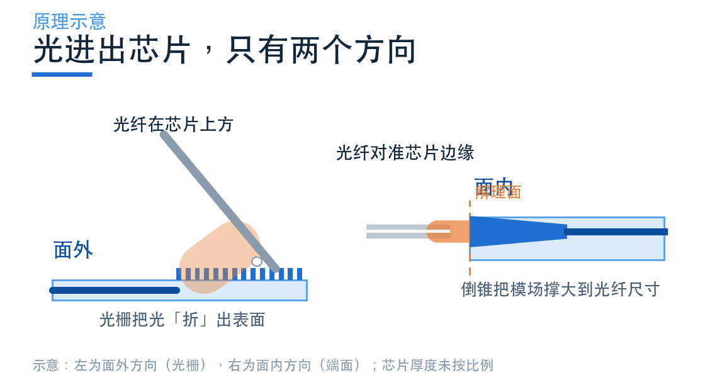
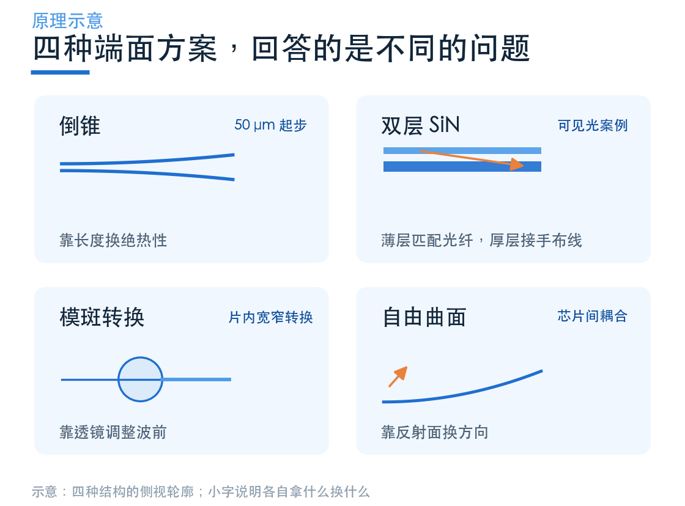
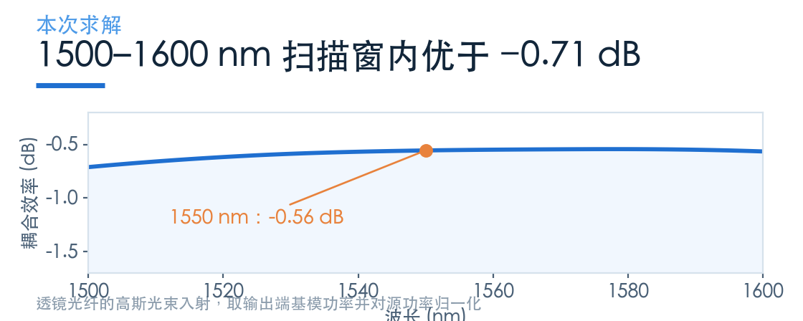
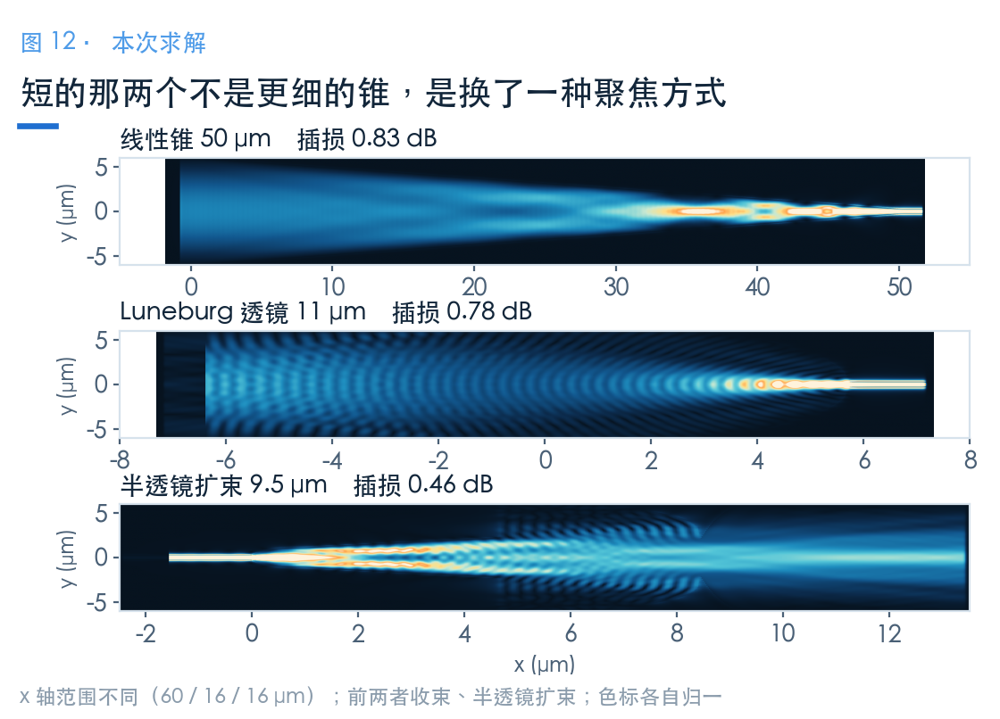

光怎么从芯片边缘进出？先把两种接口分清
待审稿：本文处于独立 PR 审核阶段，尚未收录为正式内容。定量结论、素材来源与授权仍需指定业内审核者核查。
上一组文章讲的是光怎么在片内拐弯、交叉。但光总得有个进出芯片的地方。
这件事只有两个方向：从芯片表面进出，或者从芯片边缘进出。前者是光栅耦合器，后者是端面耦合器。两种都叫「耦合」，做的事却完全不同——一个把光「折」出表面，一个把模场「撑」到光纤尺寸。
这一篇不急着讲案例，先把地图铺开：端面这条路换来了什么，代价又是什么，以及后面四篇各自回答哪个问题。
01 面外与面内，差的不只是方向
光栅耦合器坐在芯片表面，靠周期结构把波导里的导模衍射到上方。它的好处很实在：光可以从芯片任何位置进出，不用解理、不用抛光，晶圆级测试可以直接在划片前做。
代价也在带宽上。衍射角随波长变化，耦合效率的峰很窄。上一组文章里三个光栅案例的 1 dB 带宽分别是 39、42、62 nm——够用，但只够用一个波段。
端面耦合器换了个思路：把光从芯片侧面直接送进波导。没有衍射，就没有那种由周期结构决定的窄带限制。

代价是机械上的。芯片通常需要光学质量的端面，光纤要对准到这个端面上。普通通信单模光纤的模场直径约 10 μm，而典型硅波导的几何宽度约 0.5 μm；几何宽度与模场直径是不同的量。
端面模式转换器要做的，是让光纤模与片内导模相匹配，具体扩展量需由模场计算确定。
02 换来的是余量，付出的是对准
一个常被忽略的差别是对准容差。
横向容差取决于接口处的模场大小、形状与失配。端面倒锥也能把端面模场扩展，因此不能只凭「光栅」或「端面」名称给出统一的微米级容差。

端面处理、对准和固定都要计入封装成本；光栅能支持晶圆级测试，也会影响整体成本。具体取舍需要结合测试与封装流程。
带宽要求宽时，端面是值得考虑的路线。可见光和 SiN 平台同样可以使用光栅；偏振依赖、模场与工艺能力都需要逐案核查。
03 四个案例，回答四个不同的问题
端面这一族里，学习中心有四个可用案例。它们不是四个可以互相替代的选项，而是四个不同前提下的答案。

倒锥是最经典的做法。把波导尖端做到 0.19 μm，让模场慢慢扩开，直到和光纤匹配。它的全部设计难点就是「慢」——锥越长越绝热，但芯片面积不答应。
双层 SiN 将端面匹配与片内约束分开：薄上层扩展端面模场，随后经 75 μm 重叠锥形区转移到厚下层波导。100 nm 是本例层间距，不是上下衍射相消的证据。
模斑转换关注片内宽窄波导之间的转换。Notebook 给出 50 μm 线性锥、11 μm Luneburg 以及 9.5 μm 半透镜，但其截面和激励方向不同，不能把全部读数作为同条件排名。
自由曲面使用两个介质抛物反射面进行芯片间耦合；本例的 25 μm 是焦点 y 坐标差，不能直接当成芯片间空气间隙。
04 这一组文章的读数，长什么样
先给一个样本，让你知道端面能做到什么程度。
倒锥用二次轮廓、50 μm 锥长，在 1550 nm 处耦合效率是 −0.56 dB，1500–1600 nm 扫描窗口最差约 −0.71 dB。常用 C 波段约为 1530–1565 nm。

本组还包含紧凑片内转换器：半透镜六段总长 9.5 μm。它与 50 μm 光纤倒锥的端口、截面和激励不同，长度与损耗必须连同条件阅读。

上一组三个光栅案例的峰值是 −4.20、−2.08、−2.00 dB。1.5–3.5 dB 的功率差对应约 1.41–2.24 倍；这些跨案例读数不代表端面器件普遍具有这样的收益。
它们的波段、材料、激励和端口定义不同，直接排名没有意义。后面几篇会写清每条曲线各自的边界。
底反射光栅、层间模式转移和片内透镜使用了不同的结构自由度。半透镜的 −0.46 dB 是总通量传输，仅取 TE0 为 −1.45 dB；两者都不能直接替代光纤接口效率。
05 读这一组，先记住三件事
第一，看波段。 这一组的四个案例分别在 1550 nm（SOI）、400–640 nm（SiN）、1500–1600 nm（低对比度）和 650–1050 nm 工作。跨波段比数字，等于比不同物理起点。
第二，看激励。 有的案例用高斯光束模拟透镜光纤，有的显式建模光纤模，有的直接从波导端激励。三种口径下的「耦合效率」不是同一个量。
第三，看维度与网格。 双层 SiN 的模型有 13.5 亿个网格点，倒锥只有 3000 万。分辨率不同，能分辨的最小损耗也不同。
记住这三条，后面每篇的读数才不会被误读成排名。
配套案例
- Inverse taper edge coupler
- Bi-layer SiN edge coupler
- Waveguide mode size converters
- Free-form chip-to-chip coupler
更多案例见灵算光子学习中心，国内产品入口为 Tidy3D 平台。本次未验证国内注册、Notebook 导入与浏览器执行流程，请以平台当前指引为准。
本文数值来自本地实际求解。各案例的波段、材料、激励与监视器口径不同，不构成同条件下的性能排名。